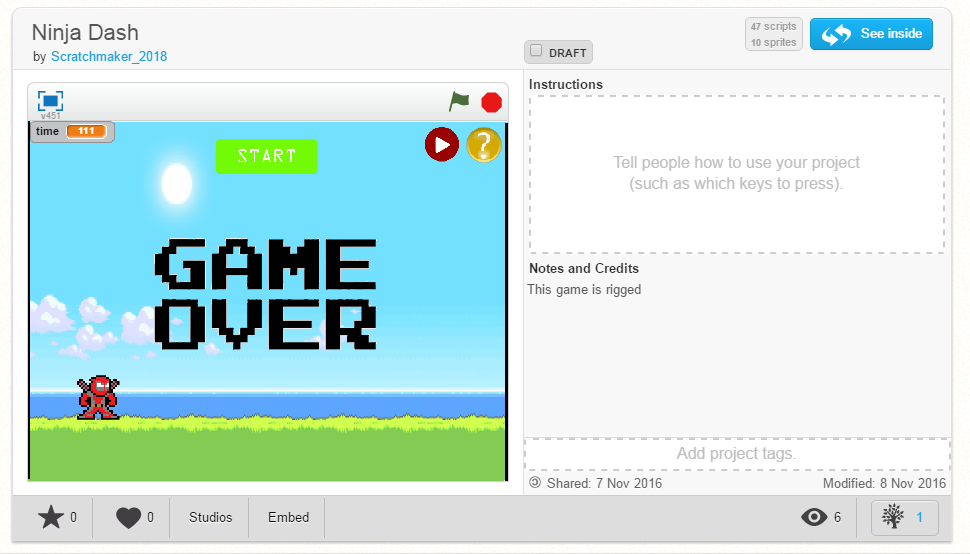
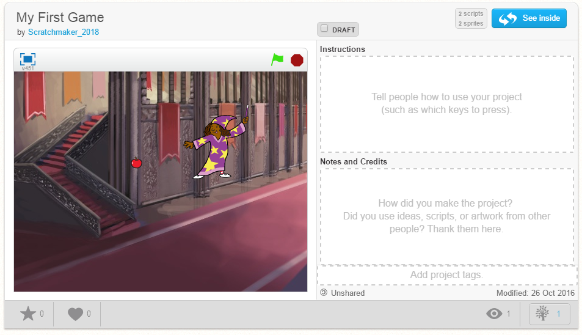

Click on picture to play the game!
 
Hello and welcome to my first produced game of the year. My partner and I worked on this through scratch. We had to change games
many times because some of the scripts were a bit hard to put together.
The purpose of our game is to avoid the ninja stars and stay alive as long possible.
The game is comprised of sprites that each have their own scripts or coding. We used scripts for cloning so that it
duplicates the sprite to make the game harder. Other scripts that we used were for movement; using the arrow keys and space bar.
The last thing that we coded were for buttons that wuld allow the player to start, restart, change music, and learn the game.
Some of the difficulties of the game was creating duplicates. The coding was fine except for the fact that they kept going after
the player loses. Another difficult thing was creating the button for help. The button would interrupt and freeze the game, making it
unplayable. The hardest part, and still has a problem, is spawning the clones. Eventually, the game gets to the poin where the person
can longer longer staying alive, leaving a cap around 100 seconds.
Shout out to Justin Nguyen for helping me with the game.
Here is a link to the site
Click on the image to go to the Interactive Fiction
The name of the story is The Party: Richard. You are invited to go to the best party around and when you get there, it's all fun and games.
However, after midnight, a killer goes around the house killing people by turning off the light. It's the person duty to select the right choices
in order to save as many lives as possible, or die to the killer.
There wasn't much of a struggle to get the story going as Matthieu is a genius and knew how to set certain things up. We used many if-else
statements for the interacting segment and if choice statements. In total, there are 6 key choices that will shape the story, two of which that are
extra and do not change the overall story. Another thing that Matthieu implemented were time sleeps that play the next bar of the story after some time.
There weren't many problems except for the time sleeps because repl.it saw certain lines as errors for some odd reasons. Besides that everything was fine.
Creating this story was a lot of fun, I would defintely do it again, except add more of a story with cahracter development. Many of the other stories that
I saw were extremely interesting with humourous choices. Others were extremely one sided to the ending.
Shout out the Matthieu Tran for being a great partner!
Click on the image to start making your own website

The title is self-explanatory. This is what I used to create this website with knowledge of html and css. The w3school logo should help if there is anything you may need help on. I used it alot. A lot.
Shout out to Quang Dang for helping me fix many of my coding errors.